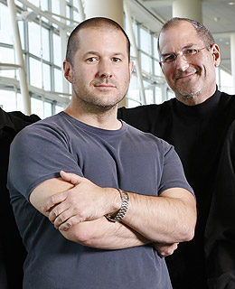

Chương 25

hi Jobs tập hợp những quản lý cấp cao cho bài diễn văn củng cố tinh thần ngay sau khi trở thành iCEO tháng 9 năm 1997, ngồi trong đám đông có một anh chàng người Anh 30 tuổi, nhạy cảm và giàu đam mê, người đứng đầu nhóm thiết kế của công ty. Jonathan Ive, được biết đến với tên gọi Jony, đang có ý định nghỉ việc. Anh mệt mỏi vì sự tập trung của công ty vào lợi nhuận tối đa thay vì thiết kế sản phẩm. Bài diễn văn của Jobs đã khiến anh phải cân nhắc lại. “Tôi nhớ rất rõ việc Steve thông báo mục tiêu của chúng tôi không chỉ để kiếm tiền mà còn tạo ra những sản phẩm tuyệt vời,” Ive nhớ lại. “Những quyết định của bạn dựa trên triết lý này về cơ bản sẽ khác với những quyết định trước đây ở Apple.” Ive và Jobs nhanh chóng thiết lập mối quan hệ biến họ trở thành bộ đôi thiết kế công nghiệp tuyệt vời nhất trong thời kỳ của mình.

Ive lớn lên ở Chingford, một ngôi làng ở phía đông bắc London. Cha anh là một thợ bạc và từng dạy học ở một trường trong vùng. “Ông ấy là một thợ thủ công tuyệt vời,” Ive nhớ lại. “Món quà giáng sinh của ông dành cho tôi là một ngày ở trong xưởng của ông ở trường học, trong kỳ nghỉ giáng sinh khi không có ai ở đó, ông giúp tôi làm bất kỳ thứ gì mà tôi muốn.” Điều kiện duy nhất là Jony phải vẽ tay thứ mà họ định làm. “Tôi luôn thấu hiểu vẻ đẹp của những thứ được làm bằng tay. Tôi nhận ra rằng điều quan trọng là sự quan tâm bạn dành cho nó. Tôi thực sự có cảm giác khinh thường khi cảm thấy sự thiếu quan tâm trong một sản phẩm.” Ive đăng ký vào Newcastle Polytechnic và dành thời gian rỗi và các mùa hè làm việc cho một phòng tư vấn thiết kế. Một trong những sáng tạo của anh là cây bút với một quả bóng nhỏ ở trên cùng khiến việc đùa nghịch với nó rất thú vị. Nó giúp người sở hữu có mối lên hệ của cảm xúc khá vui vẻ với cây bút. Với quan điểm này anh đã thiết kế một chiếc tai nghe và một chiếc khuyên - bằng nhựa trắng tinh khiết - để giao tiếp với những trẻ khiếm thính. Căn phòng của anh đầy những mô hình bằng xốp do anh làm giúp tạo ra những thiết kế hoàn hảo. Anh cũng từng thiết kế một máy ATM và một chiếc điện thoại uốn cong, cả hai đều được giải thưởng của Royal Society of Arts. Không giống như các nhà thiết kế khác, Ive không chỉ vẽ những phác thảo đẹp: anh còn tập trung vào cách chế tạo và cách các thành phần bên trong hoạt động. Anh có một linh cảm từ khi còn học đại học, về ngày mà anh có thể thiết kế một chiếc Macintosh. “Tôi đã phát hiện ra Mac và cảm thấy như mình có một sợi dây kết nối với những người đã tạo ra sản phẩm này,” anh nhớ lại.“Tôi bỗng nhiên hiểu được công ty này là gì, hay nó nên trở thành cái gì.” Sau khi tốt nghiệp, Ive đã giúp xây dựng một công ty thiết kế ở London, Tangerine, từ đó có một hợp đồng tư vấn với Apple. Năm 1992 anh chuyển tới Cupertino để nhận công việc trong bộ phận thiết kế của Apple. Anh trở thành người đứng đầu bộ phận này năm 1996, một năm trước khi Jobs quay trở lại, nhưng anh không hạnh phúc với nó. Amelio có rất ít sự trân trọng với các thiết kế. “ở đây không có cảm nhận về sự quan tâm tới các sản phẩm, bởi chúng tôi cố gắng tối đa hóa số tiền mình kiếm được,” Ive nói. “Tất cả những gì họ muốn từ bên thiết kế chúng tôi là tạo ra các mẫu hình với dáng vẻ bên ngoài mong muốn, sau đó các kỹ sư sẽ phát triển nó rẻ nhất có thể.
Tôi đã chuẩn bị nghỉ việc.”
Khi Jobs tiếp quản công ty và có buổi ra mắt, Ive quyết định ở lại. Nhưng đầu tiên Jobs tìm kiếm một nhà thiết kế đẳng cấp thế giới từ bên ngoài, ông nói chuyện với Richard Sapper, người đã thiết kế IBM ThinkPad, và Giorgetto Giugiaro, người thiết kế Ferrari 250 và Maserati Ghibli.
Nhưng sau đó ông đã viếng thăm phòng thiết kế của Apple và gắn chặt với một Ive hết sức nhã nhặn, háo hức và vô cùng thiết tha. “Chúng tôi đã bàn luận về các phương pháp định hình và các loại vật liệu,” Ive nhớ lại. “Chúng tôi ở trên cùng một bước sóng. Tôi đột nhiên hiểu vì sao mình lại yêu công ty này.”
Ive báo cáo, ít nhất là thời điểm ban đầu, cho Jon Rubinstein, người Jobs mang tới để lãnh đạo bộ phận phần cứng, tuy nhiên anh đã tạo dựng một mối quan hệ trực tiếp và mạnh mẽ khác thường với Jobs. Họ bắt đầu ăn trưa cùng nhau thường xuyên, và Jobs thường kết thúc một ngày bằng việc tới phòng thiết kế của Ive để trò chuyện. “Jony có một vị trí đặc biệt,” Laurene Powell nói. “Cậu ấy tới nhà chúng tôi, và gia đình chúng tôi trở nên gần gũi hơn. Steve không bao giờ cố ý làm tổn thương cậu ấy. Phần lớn mọi người trong cuộc đời Steve có thể thay thế. Nhưng không phải Jony.”
Jobs miêu tả cho tôi sự tôn trọng của ông với Ive:
Sự khác biệt mà Jony tạo ra, không chỉ ở Apple mà trên cả thế giới, là rất lớn. Cậu ấy là một người vô cùng thông minh, trên mọi phương diện. Cậu ấy hiểu các khái niệm kinh doanh và marketing. Cậu ấy chọn lựa mọi thứ chỉ như một cú nhấp chuột. Jony hiểu cốt lõi của những gì chúng tôi làm hơn bất kỳ ai. Nếu tôi có một người bạn tâm giao ở Apple, đó là Jony. Jony và tôi nghĩ về phần lớn các sản phẩm cùng nhau và sau đó kéo mọi người lại và nói, “Này, các cậu nghĩ gì về cái này?” Cậu ấy nắm được bức tranh toàn cảnh, cũng như những chi tiết cực kỳ nhỏ bé ở mỗi sản phẩm. Và cậu ấy hiểu Apple là một công ty của các sản phẩm. Cậu ấy không chỉ là một nhà thiết kế bình thường. Đó là lý do tại sao cậu ấy làm việc trực tiếp với tôi. Cậu ấy có quyền năng hơn bất kỳ ai ở Apple ngoại trừ tôi. Không ai có thể nói cậu ấy cần phải làm gì, hay bỏ cái gì. Đó là cách mà tôi sắp xếp.
Giống như hầu hết các nhà thiết kế khác, Ive yêu thích việc phân tích các triết lý và suy nghĩ từng bước để tới một thiết kế cụ thể nào đó. Với Jobs, quá trình này mang tính trực giác hơn. ông ấy thưởng chỉ các mô hình và phác thảo và mình thích và vứt những cái mình không thích đi.
Ive sau đó lấy những gợi ý đó và phát triển những mẫu Jobs ủng hộ.
Ive hâm mộ nhà thiết kế công nghiệp người Đức Dieter Rams, người từng làm việc cho hãng điện tử Braun. Rams luôn truyền bá nguyên tắc “ít nhưng tốt hơn,” Weniger aber besser, và cũng như vậy, Jobs cùng Ive luôn thay đổi mỗi thiết kế mới để thấy họ có thể đơn giản nó tới mức nào. Kể từ khi tập sách quảng cáo đầu tiên của Apple tuyên bố “Đơn giản là sự tinh tế tối cao,” Jobs luôn hướng tới sự đơn giản bằng cách chinh phục điều phức tạp, thay vì lờ chúng đi. “Phải mất rất nhiều công sức,” ông nói, “để biến mọi thứ trở nên đơn giản, để thực sự hiểu những thách thức bên trong và đưa ra các giải pháp thanh thoát.”
Ở Ive, Jobs đã gặp người bạn tâm giao trong việc tìm kiếm cái đơn giản thực sự, thay vì chỉ đơn giản ở vẻ ngoài. Ngồi trong phòng thiết kế của mình, Ive mô tả triết lý của anh: Tại sao chúng tôi lại cho sự đơn giản là tốt? Bởi vì với những sản phẩm vật lý, chúng ta cần phải cảm nhận khả năng mình có thể thống trị chúng. Bằng việc mang trật tự tới những thứ phức tạp, bạn tìm ra cách để khiến sản phẩm chiều theo ý bạn. Đơn giản không chỉ là phong cách bên ngoài. Không phải là tối giản hóa hay loại bỏ sự lộn xộn. Nó bao gồm việc đào sâu vào sự phức tạp.
Để trở nên thực sự đơn giản, bạn phải đi thật sâu vào nó. Ví dụ như, để có một sản phẩm không dùng ốc vít, bạn sẽ tạo ra một sản phẩm quá nhiều đoạn xoắn và rất phức tạp. Cách tốt hơn là đi sâu hơn với sự đơn giản, để hiểu mọi thứ về nó và cách nó được sản xuất. Bạn cần hiểu rõ cốt lõi của một sản phẩm để có thể loại bỏ những phần không thực sự quan trọng.
Đó là nguyên tắc cơ bản mà Jobs và Ive cùng chia sẻ. Thiết kế không chỉ là việc sản phẩm sẽ nhìn như thế nào phía bên ngoài. Nó phải phản chiếu cốt lõi của sản phẩm. “Trong vốn từ của hầu hết mọi người, thiết kế có nghĩa là trang trí,” Jobs nói với Fortune một thời gian sau khi quay lại Apple. “Nhưng với tôi, không gì có thể đi xa hơn ý nghĩa của thiết kế. Thiết kế là tinh thần cơ bản ở những sáng tạo bởi con người mà sau đó thể hiện sự thành công của nó qua những lớp vỏ bên ngoài.”
Kết quả là, quá trình thiết kế sản phẩm ở Apple liên quan chặt chẽ với cách mà nó được sắp xếp và chế tạo. Ive mô tả một trong những chiếc Power Mac của Apple: “Chúng tôi muốn bỏ hết tất cả những gì không cần thiết trừ những phần cơ bản nhất,” anh nói. “Để làm vậy cần sự hợp tác nhất quán giữa những người thiết kế, người phát triển sản phẩm, các kỹ sư và nhóm sản xuất.
Chúng tôi thường xuyên phải bắt đầu lại từ đầu, hết lần này tới lần khác. Chúng ta có cần bộ phận này không? Chúng ta có thể lấy nó để thực hiện chức năng của bốn bộ phận kia không?” Sự kết nối giữa thiết kế của một sản phẩm, những tinh hoa của nó, và việc sản xuất được thể hiện cho Jobs và Ive khi họ tới Pháp và tới một cửa càng cung cấp đồ nấu bếp. Ive chọn một con dao mà anh thích, nhưng sau đó lại bỏ nó xuống trong sự thất vọng. Jobs cũng vậy. “Cả 2 chúng tôi đều nhận thấy một chút keo rất mỏng giữa cán và lưỡi dao,” Ive nhớ lại. Họ nói về việc thiết kế tốt của con dao đã bị phá hủy bởi cách nó được chế tạo. “Chúng tôi không muốn nghĩ tới những con dao của mình bị gắn lại bằng keo dán,” Ive nói. “Steve và tôi quan tâm tới những thứ như vậy, nó phá hủy sự thuần khiết và lấy đi những phần cốt yếu của một dụng cụ, và chúng tôi đã có suy nghĩ giống nhau về cách phát triển ra các sản phẩm nhìn thuần khiết và liền mảnh.” Ở phần lớn các công ty khác, các kỹ sư có xu hướng định hướng thiết kế. Các kỹ sư đặt ra các thông số kỹ thuật cùng yêu cầu, và nhóm thiết kế đưa ra các lớp vỏ phù hợp với chúng. Với Jobs, quá trình này có khuynh hướng đi theo cách khác, ở những ngày đầu tại Apple, Jobs đã phê duyệt thiết kế của chiếc Macintosh nguyên thủy, và các kỹ sư cần làm bo mạch và các bộ phận phù hợp với nó.
Sau khi bị buộc phải ra đi, quy trình ở Apple đảo ngược lại theo hướng các kỹ sư quyết định. “Trước khi Steve quay lại, các kỹ sư thường nói „Đây là phần lõi‟ - bộ vi xử lý, ổ cứng - và nhóm thiết kế sẽ đặt chúng vào trong một chiếc hộp,” giám đốc marketing của Apple Phil Schiller nói. “Khi bạn làm theo cách này, bạn sẽ có những sản phẩm dễ sợ.” Nhưng khi Jobs quay lại và kết nối với Ive, sự cân bằng lại một lần nữa hướng về những người thiết kế. “Steve luôn nhấn mạnh với chúng tôi về việc thiết kế được gắn với những thứ sẽ làm chúng tôi trở nên tuyệt vời,” Schiller nói. “Thiết kế một lần nữa lại điều khiển kỹ thuật, chứ không phải ngược lại.” Đôi khi việc này có thể phản tác dụng, như khi Jobs và Ive khăng khăng đòi sử dụng một miếng nhôm mỏng ở các cạnh của chiếc iPhone 4 mặc dù các kỹ sư đã lo lắng về việc nó có thể làm nhiễu ăng ten. Tuy nhiên thông thường thì sự đặc biệt trong các thiết kế của họ - cho iMac, iPod, iPhone và iPad - đã đưa Apple tiến xa tới thắng lợi to lớn của nó trong những năm sau khi Jobs trở lại.
Trong phòng thiết kế
Phòng thiết kế nơi Ive cai trị, nằm ở tầng trệt của Two Infinite Loop ở trụ sở của Apple, được bao bọc với kính phản quang và một cánh cửa nặng nề khóa kín. ở ngay phía trong là bàn lễ tân bọc kính nơi 2 trợ lý kiểm soát quyền lối vào. Ngay cả những nhân viên cấp cao của Apple cũng không được quyền vào nếu không có sự cho phép đặc biệt. Phần lớn các buổi phỏng vấn của tôi với Jony Ive cho cuốn sách này được sắp đặt ở nơi khác, nhưng một ngày năm 2010 cậu ấy sắp xếp cho tôi một buổi chiều thăm quan phòng thiết kế này và nói về sự hợp tác của cậu ấy với Jobs ở đây.
ở bên trái lối vào là khu vực bàn của những nhà thiết kế trẻ tuổi; ở bên phải là phòng chính giống như một hang động với 6 chiếc bàn thép dài nơi trình bày và thử nghiệm các sản phẩm đang phát triển, ở phía sau phòng chính là một phòng thiết kế sử dụng máy tính, với đầy các máy trạm, kế đó là một phòng với các máy đúc để biến những thứ trên màn hình thành các mô hình bằng bọt biển. Sau đó là phòng phun sơn do rô bốt điều khiển để làm các mô hình trông như thật. Khung cảnh nhìn khá thưa thớt và công nghiệp, với trang trí màu xám kim loại. Những chiếc lá cây ở phía bên ngoài tạo ra những khối di chuyển của ánh sáng và bóng tối trên các cửa sổ. Nhạc techno và jazz được bật ở các phòng.
Gần như tất cả các ngày khi Jobs khỏe và ở văn phòng, ông đều ăn trưa cùng Ive và dạo chơi trong phòng thiết kế vào buổi chiều. Khi ông vào, ông có thể quan sát các bàn và xem các sản phẩm trên dây chuyền, cảm nhận sự phù hợp của nó với chiến lược của Apple, và kiểm tra sự tiến triển trong mỗi thiết kế. Thường chỉ có 2 người họ với nhau, trong khi những người khác quan sát công việc của họ nhưng giữ một khoảng cách tôn trọng. Nếu Jobs có một vấn đề cụ thể nào, ông có thể gọi người đứng đầu nhóm thiết kế kỹ thuật hay người khác trong nhóm trợ thủ của Ive. Nếu có thứ gì làm ông thích thú hay lóe lên những suy nghĩ về chiến lược của công ty, ông sẽ gọi giám đốc vận hành Tim Cook hay giám đốc marketing Phil Schiller tới và tham gia cùng họ. Ive mô tả quá trình thông thường:
Căn phòng tuyệt vời này là nơi duy nhất trong công ty mà bạn có thể nhìn quanh và thấy tất cả những thứ chúng tôi đang phát triển. Khi Steve tới, ông sẽ ngồi trên một trong những chiếc bàn này. Ví dụ nếu chúng tôi làm việc trên một chiếc iPhone mới, ông ấy sẽ lấy một chiếc ghế, bắt đầu trải nghiệm các mô hình khác nhau và cảm nhận chúng trong trong lòng bàn tay, ghi nhớ những chiếc mà ông thích nhất. Sau đó ông lướt qua bàn khác, chỉ có ông ấy và tôi, để xem tất cả các sản phẩm khác đang tới đâu. ông ấy có thể cảm nhận sự dịch chuyển của cả công ty, của chiếc iPhone, iPad, iMac, các máy xách tay và tất cả những gì chúng tôi đang cân nhắc. Nó giúp ông nhìn rõ những điểm công ty đang dồn sức vào và cách chúng kết nối với nhau, ông ấy có thể hỏi,
“Làm việc này có ý nghĩa gì không, có phải vì ở bên này chúng ta đang phát triển rất nhanh?” hay những câu hỏi tương tự. ông ấy luôn nhìn sự việc theo những mối quan hệ với nhau, vốn rất khó trong một công ty lớn. Nhìn vào các mô hinh trên những chiếc bàn này, ông ấy có thể thấy tương lai của 3 năm sau nữa.
Phần lớn nhất trong quá trình thiết kế là tranh luận, một cuộc ngược xuôi khi chúng tôi đi quanh những chiếc bàn và thử nghiệm các mô hình, ông ấy không muốn đọc các bản vẽ phức tạp.
ông luôn muốn thấy và cảm nhận về các mô hình, ông ấy đúng. Tôi đã rất ngạc nhiên khi chúng tôi tạo một mô hình và nhận thấy nó thật vô giá trị, mặc dù nó dựa trên thiết kế rất đẹp vẽ bởi máy tính.
Ông ấy thích tới đây bởi ở đây luôn êm đềm và thoải mái. Đó là một thiên đường nếu bạn là người thiên về thị giác. Không có những buổi đánh giá cứng nhắc về các thiết kế, vì thế cũng không có những điểm quyết định quan trọng. Thay vào đó, chúng tôi làm các quyết định thay đổi thường xuyên. Khi chúng tôi lặp lại điều đó mỗi ngày và không bao giờ có những buổi trình chiếu ngu ngốc, chúng tôi không bị vướng vào những bất đồng lớn.
Vào một ngày khi Ive đang theo dõi việc tạo ra một giắc cắm điện mới cho thị trường châu Âu và một giắc nối cho Macintosh. Hàng chục mô hình, mỗi chiếc đều có những thay đổi rất nhỏ, đã được đưa ra và sơn để xem xét. Một số người có thể thấy lạ khi trưởng nhóm thiết kế lại phải lăn tăn với những thứ như thế, tuy nhiên cả Jobs cũng tham gia vào việc đó. Từ khi ông có một nhà cung cấp thiết bị sạc đặc biệt cho Apple II, Jobs quan tâm không chỉ về việc chế tạo mà còn quan tâm tới việc thiết kế của những phần như vậy. Tên của ông được ghi trên bằng sáng chế của cục sạc màu trắng được dùng cho MacBook, cũng như đầu nối nam châm với tiếng „tách‟ đầy thỏa mãn của nó.
Thực tế là ông được nêu tên trong 212 bằng sáng chế khác nhau của Apple ở Mỹ vào thời điểm đầu năm 2011.
Ive và Jobs cũng ám ảnh, và đã đăng ký sáng chế, với việc đóng gói các sản phẩm khác nhau của Apple. Bằng sáng chế U.S. D558572 là một ví dụ, được cấp ngày 1/1 năm 2008 cho hộp của chiếc iPod Nano, với 4 hình vẽ thể hiện cách thiết bị bám chặt vào khung khi hộp được mở ra.
Bằng D596485, được cấp ngày 21/7/2009, cho hộp của chiếc iPhone, với một cái nắp cứng và một khay nhựa láng bóng ở bên trong.
Trước kia Mike Markkula từng dạy cho Jobs cách “đổ thừa” - để hiểu rằng người ta thực sự phán xét một quyển sách qua tấm bìa của nó - và vì thế cần đảm bảo tất cả vẻ ngoài và các bao bì sản phẩm của Apple đều cho thấy nó ẩn chứa một viên ngọc quý ở bên trong. Cho dù đó là một chiếc iPod Mini hay một chiếc MacBook Pro, khách hàng của Apple biết cảm giác khi mở một chiếc hộp được sản xuất chất lượng và tìm thấy sản phẩm nằm gọn bên trong một cách đầy mời mọc. “Steve và tôi bỏ rất nhiều thời gian cho việc đóng gói. Bạn thiết kế một nghi thức trong việc mở hộp để làm sản phẩm trở nên đặc biệt hơn. Đóng gói có thể là một nhà hát, nó có thể tạo nên cả một câu chuyện.”
Ive, người có sự nhạy cảm của một nghệ sĩ, đôi khi cảm thấy bất đồng với Jobs vì ông chiếm quá nhiều danh tiếng, một thói quen khiến các đồng sự khó chịu qua nhiều năm. Cảm xúc cá nhân của anh với Jobs mạnh đến nỗi đôi khi anh rất dễ bị bắt nạt. “ông ấy xem xét các ý tưởng của tôi và nói, „Nó không hay. Nó không hay lắm. Tôi thích cái này,‟” Ive nói. “Và sau đó tôi sẽ ngồi trong đám đông và ông ấy sẽ nói về nó như thể đó là ý tưởng của ông ấy vậy. Tôi đặt sự chú ý điên cuồng tới những nơi mà ý tưởng xuất hiện, và tôi luôn giữ cuốn sổ của mình được lấp đầy các ý tưởng. Vì thế tôi đau lòng khi ông ấy chiếm lấy danh tiếng từ một trong các thiết kế của tôi.” Ive cũng thường nổi giận khi những người ngoài mô tả Jobs như người duy nhất có các ý tưởng tại Apple. “Điều đó khiến chúng tôi dễ bị tổn thương với tư cách là một nhóm,” Ive nói một cách nghiêm túc, giọng nhẹ nhàng. Nhưng sau đó cậu ấy dừng lại để nhìn nhận vai trò của Jobs trên thực tế. “ở rất nhiều công ty khác, ý tưởng và các thiết kế tuyệt vời biến mất trong quy trình làm việc,” anh nói. “Những ý tưởng đến từ tôi và nhóm của tôi sẽ không có ý nghĩa, ở bất kỳ đâu, nếu Steve không có ở đó và thúc đẩy chúng tôi, làm việc với chúng tôi, và vượt qua tất cả sự cản trở để biến ý tưởng của chúng tôi thành các sản phẩm.”